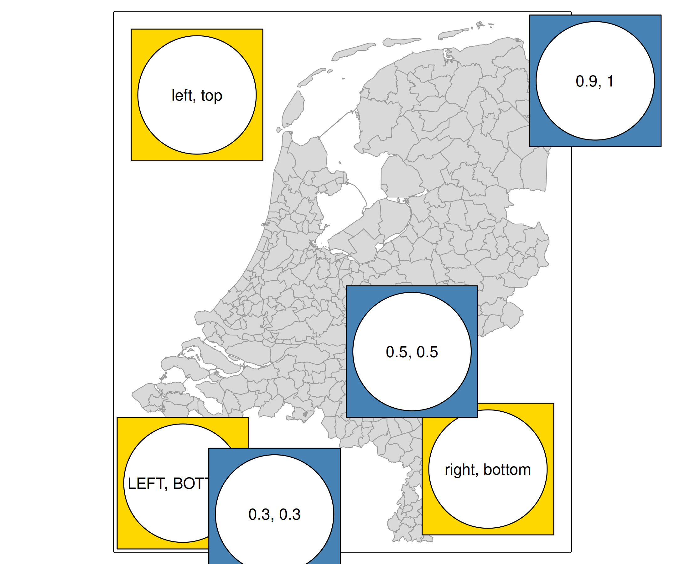
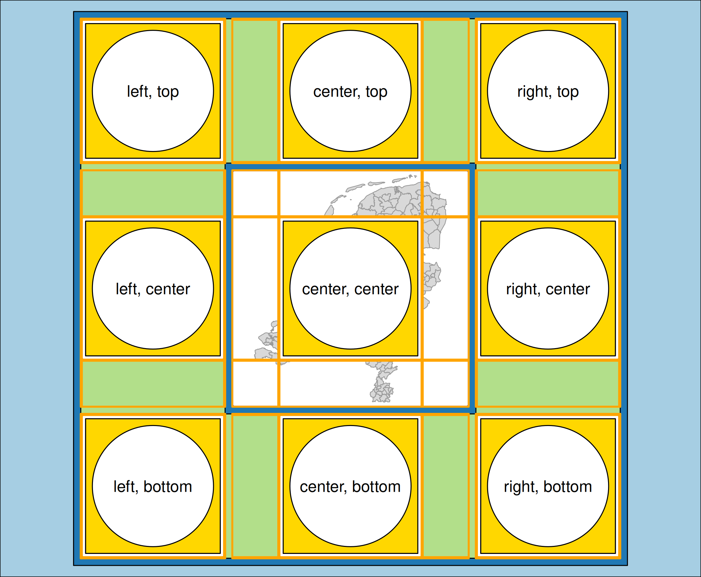
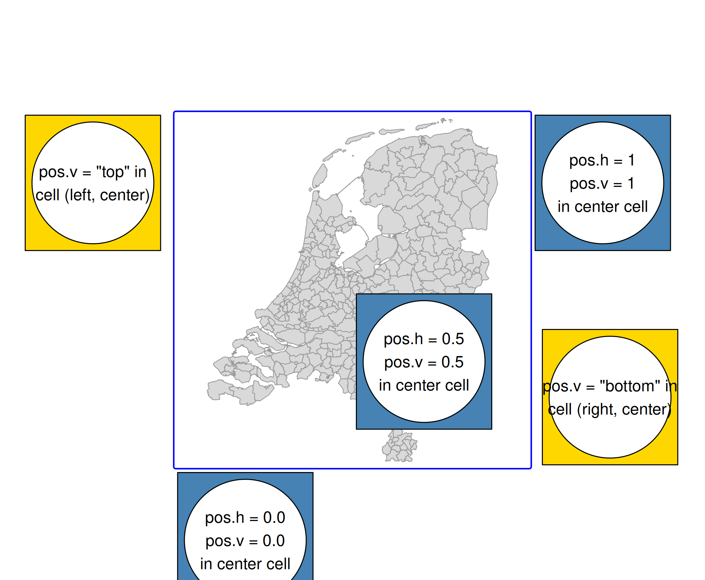
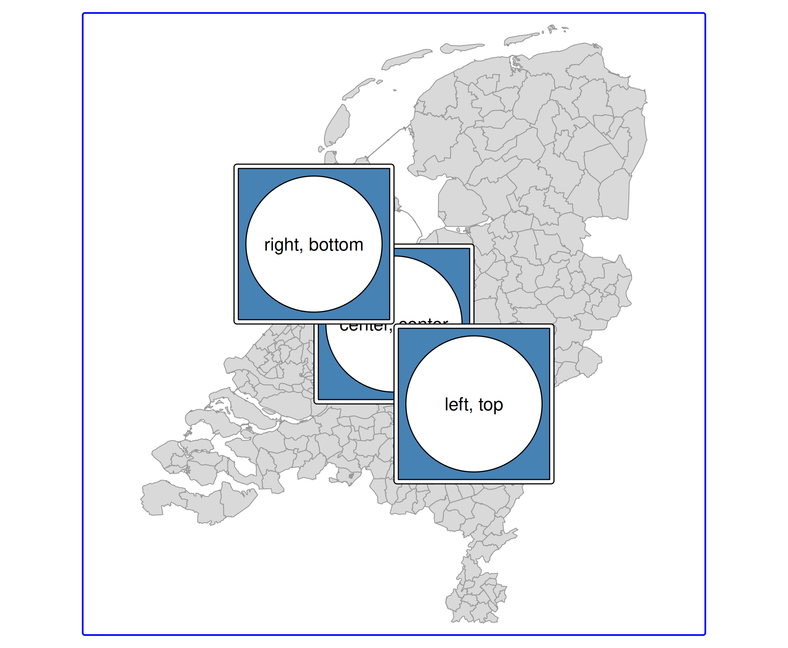
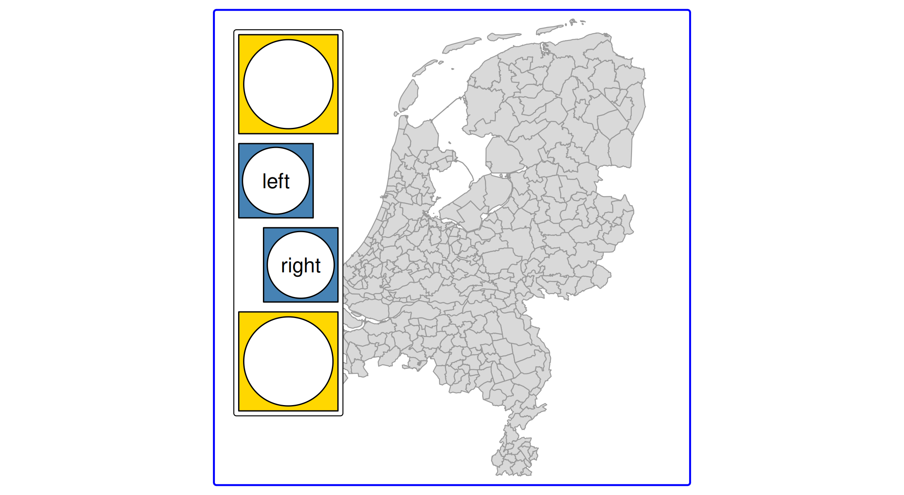

Note: this is written for the upcoming version 4.1
Recall from the vignette about components that the position argument of map components specifies their position.
It can be specified in two ways:
- An object from the
tm_pos(), or one of its wrappers, such astm_pos_in()andtm_pos_out(). - A vector of length two, which is a shortcut for placement inside the map frame, a shortcut for
tm_pos_in()
We will use a self-made map component, made with the grid package that we show via tm_inset().
g = function(text) grid::gList(
grid::rectGrob(gp=grid::gpar(fill = "gold")),
grid::circleGrob(r = .45),
grid::textGrob(text))
b = function(text) grid::gList(
grid::rectGrob(gp=grid::gpar(fill = "steelblue")),
grid::circleGrob(r = .45),
grid::textGrob(text))Shortcut method (inside the map frame)
The position can be a vector of two values, where the first is the horizontal position and the second the vertical position. It is a shortcut for tm_pos_in(), which is explained in the next sections.
There are two options:
Character vector of two
- the first value specifies the horizontal position (
"left","center","right"), and - the second one the vertical position (
"top","center","bottom").
Upper case means tight to the frame. Otherwise an offset margin is applied (can be specified with offset, see below).
Numeric vector of two
This can be seen as the ‘manual’ mode, because it provides more freedom.
- the first value specifies the horizontal position, where 0 corresponds to left and 1 to right.
- the second value specifies the vertical position where 0 is bottom and 1 top.
By default, these values will specify the position of the left top corner of the component. This justification point can be changed using the just.h and just.v arguments of [tm_pos()], see below.
Example
The character positioned components are in gold and the numeric positioned components in blue.
tm_shape(NLD_muni) +
tm_polygons("grey85", col = "grey60") +
tm_inset(g("left, top"), position = c("left", "top")) +
tm_inset(g("right, bottom"), position = c("right", "bottom")) +
tm_inset(g("LEFT, BOTTOM"), position = c("LEFT", "BOTTOM")) +
tm_inset(b("0.3, 0.3"), position = c(0.2, 0.2)) +
tm_inset(b("0.5, 0.5"), position = c(0.5, 0.5)) +
tm_inset(b("0.9, 1"), position = c(0.9, 1)) 
Advanced method with tm_pos()
The 3 x 3 grid
The whole plot area is a 3 x 3 grid, where the map (or facets) are drawn in the center grid cell.
There are three variants (wrappers) of the main function tm_pos():
-
tm_pos_out()draws the component outside the map frame (so in one of the 3 x 3 grid cells) -
tm_pos_in()andtm_pos_on_top()draw the component in the middle grid cell. The difference is that the former takes the frame (and offset from it) into account while the latter doesn’t.
cell.h and cell.v
The arguments cell.h and cell.v determine the grid cell. These should only be used for tm_pos_out(). For the other position function, they are already set to "center" (the center grid cell in which the map is drawn).
tm_shape(NLD_muni) +
tm_polygons("grey85", col = "grey60") +
tm_inset(g("center, center"), position = tm_pos_on_top(pos.h = "center", pos.v = "center")) +
tm_inset(g("left, center"), position = tm_pos_out("left", "center", pos.v = "center")) +
tm_inset(g("right, center"), position = tm_pos_out("right", "center", pos.v = "center")) +
tm_inset(g("left, top"), position = tm_pos_out("left", "top")) +
tm_inset(g("center, top"), position = tm_pos_out("center", "top", pos.h = "center")) +
tm_inset(g("right, top"), position = tm_pos_out("right", "top")) +
tm_inset(g("left, bottom"), position = tm_pos_out("left", "bottom")) +
tm_inset(g("center, bottom"), position = tm_pos_out("center", "bottom", pos.h = "center")) +
tm_inset(g("right, bottom"), position = tm_pos_out("right", "bottom")) +
tm_layout(asp = 1, frame.color = "blue", frame.lwd = 2)
Note that we used pos.h and pos.v. These will be explained in the next section.
pos.h and pos.v
The position of a component within a cell. These values are similar to the shortcut values described above:
- Character values:
"left","center", or"right"(or in upper case) forpos.hand"top","center", and"bottom"forpos.v. - Numeric values: 0 (left) to 1 (right) for
pos.h, and 0 (bottom) to 1 (top) forpos.v
tm_shape(NLD_muni) +
tm_polygons("grey85", col = "grey60") +
tm_inset(g("pos.v = \"top\" in\ncell (left, center)"),
position = tm_pos_out("left", "center", pos.v = "top")) +
tm_inset(g("pos.v = \"bottom\" in\ncell (right, center)"),
position = tm_pos_out("right", "center", pos.v = "bottom")) +
tm_inset(b("pos.h = 0.0\npos.v = 0.0\nin center cell"),
position = tm_pos_in(pos.h = 0.0, pos.v = 0.0)) +
tm_inset(b("pos.h = 0.5\npos.v = 0.5\nin center cell"),
position = tm_pos_in(pos.h = 0.5, pos.v = 0.5)) +
tm_inset(b("pos.h = 1\npos.v = 1\nin center cell"),
position = tm_pos_in(pos.h = 1, pos.v = 1)) +
tm_layout(asp = 1, frame.color = "blue", frame.lwd = 2)
Recall that the justification point for the numeric specifications is the top left corner of the component. This can be adjusted via just.h and just.v as explained next.
just.h and just.v
In case pos.h and pos.v are numbers, the justification can be set with
-
just.h:"left","center", or"right" -
just.v:"top","center", and"bottom"
tm_shape(NLD_muni) +
tm_polygons("grey85", col = "grey60") +
tm_inset(b("center, center"),
position = tm_pos_in(0.5, 0.5, just.h = "center", just.v = "center")) +
tm_inset(b("left, top"),
position = tm_pos_in(0.5, 0.5, just.h = "left", just.v = "top")) +
tm_inset(b("right, bottom"),
position = tm_pos_in(0.5, 0.5, just.h = "right", just.v = "bottom")) +
tm_layout(asp = 1, frame.color = "blue", frame.lwd = 2)
align.h and align.v
In case there are multiple components in the same position (see next section), the alignment determines how a component is aligned.
The alignment of components within the same cell:
tm_shape(NLD_muni) +
tm_polygons("grey85", col = "grey60") +
tm_inset(g(""),
width = 4, height = 4,
position = tm_pos_in("left", "top")) +
tm_inset(b("left"),
width = 3, height = 3,
position = tm_pos_in("left", "top", align.h = "left")) +
tm_inset(b("right"),
width = 3, height = 3,
position = tm_pos_in("left", "top", align.h = "right")) +
tm_inset(g(""),
width = 4, height = 4,
position = tm_pos_in("left", "top")) +
tm_layout(asp = 1, frame.color = "blue", frame.lwd = 2)
Automatic positioning
The default position of legends and map components are in some cases done automatically. Automatic positioning can be achieved by setting a position argument to tm_pos_auto_in() or tm_pos_auto_out(). The former checks in which map corner is most space available (and bases pos.h and pos.v on that). The latter calculates in which grid cell (so cell.h and cell.v) the map components can be positioned, which is based on the aspect ratio and margins.
Grouping components
What happens when components share the same position? See next vignette